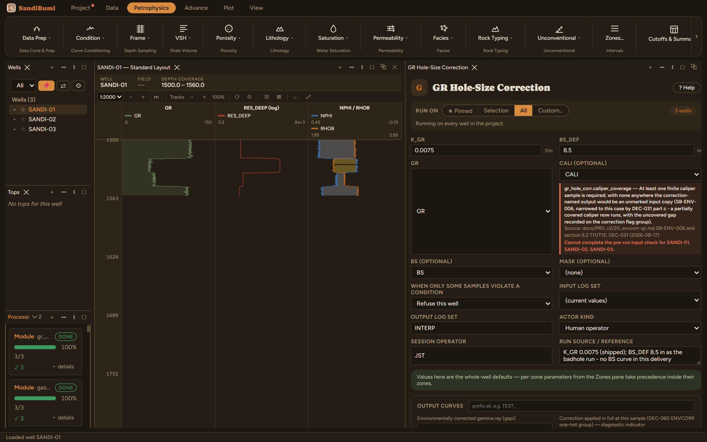

GR Hole-Size Correction restores the gamma-ray counts a big hole absorbs. The detector sits in mud; the more mud between it and the formation, the more gamma rays are attenuated before they arrive, so GR reads low exactly where the hole washes out. The module writes GR_EC, the corrected log, with the usual extent companions recording where the correction could and could not be evaluated. Run it before any shale-volume work if the caliper shows real washouts, because a GR biased low in bad hole understates clay there.
This is the pragmatic linear form of the correction: the added count rate is proportional to how much the hole diameter exceeds the bit size, GR_EC = GR × (1 + K_GR × (CALI − BS)). The rigorous answer is the tool vendor's borehole chart, which depends on tool, mud weight and centering; K_GR is the slope of that chart linearised around your hole size. That makes K_GR a per-tool, per-mud number to read from the chart, not a constant of nature.
3 clean. 1155 of 1185 samples received a positive correction (the rest sit at or under gauge), averaging +0.80 gAPI with a maximum of +1.80 gAPI in the deepest washouts. Small numbers, and that is worth reading correctly: on an 8.6 in hole over an 8.5 in bit almost nothing changes, and only the 2.5 in washouts earn a visible shift. A correction that moves quiet hole is a miscalibrated one. Compare before and after in the Database Inspector:
SELECT AVG(g.value - s.gr), MAX(g.value - s.gr) FROM computed_curves g JOIN standard_curves s ON g.well_id = s.well_id AND g.depth = s.depth WHERE g.curve_name = 'GR_EC' AND g.value - s.gr > 1e-6
